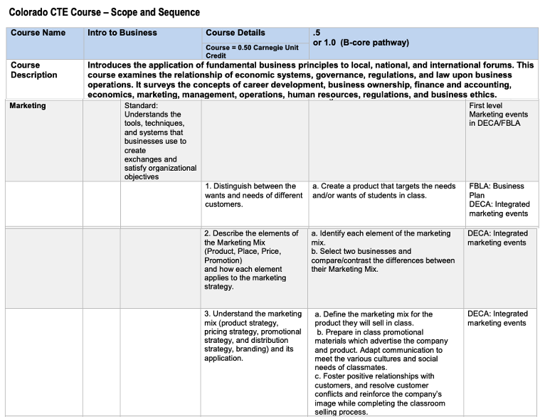
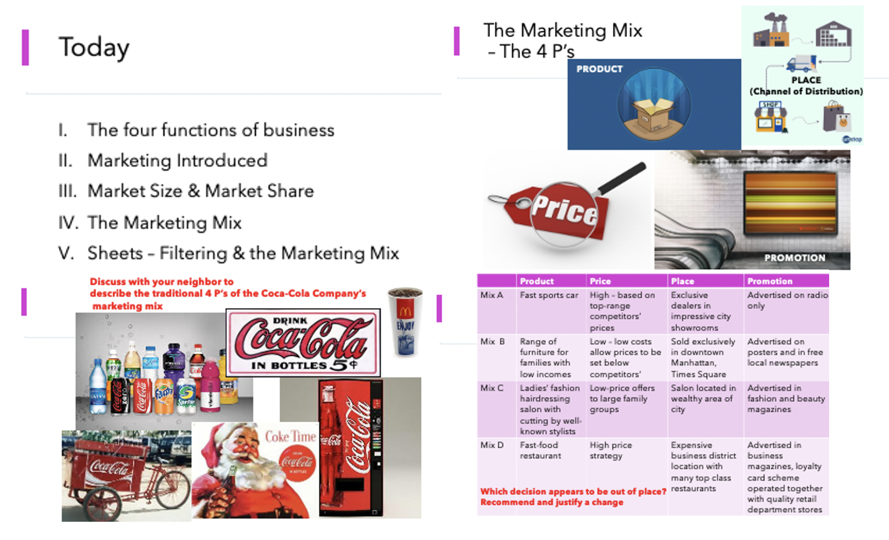
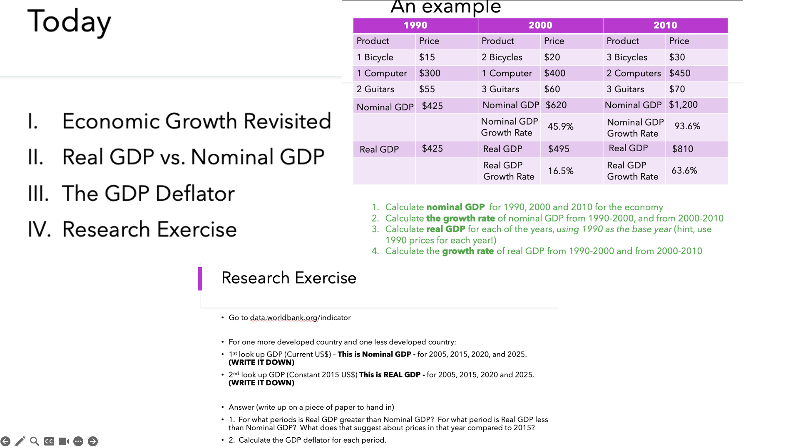
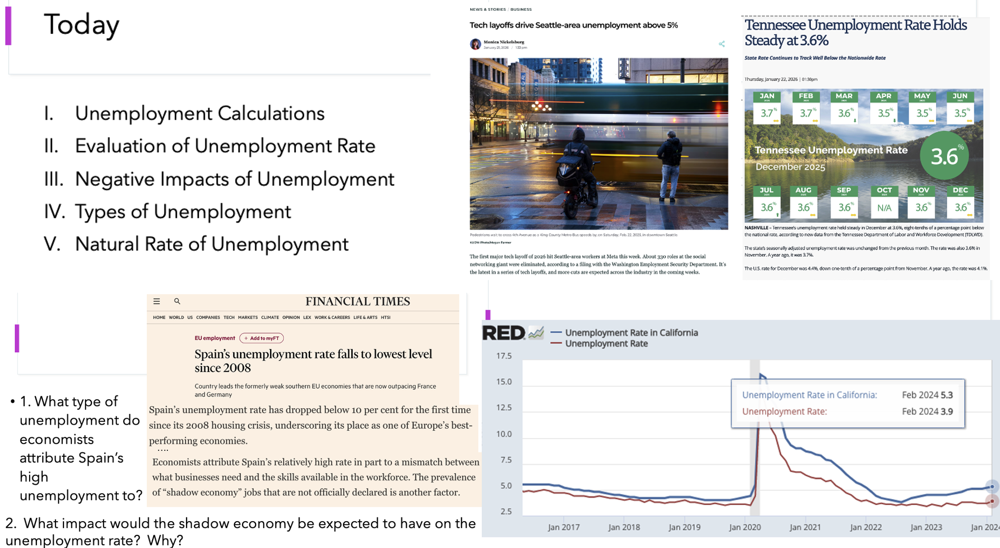

Quality Standard I
Teachers demonstrate mastery of pedagogical expertise in the content they teach
Element A - Teachers provide instruction that is aligned with the Colorado Academic standards, their District's organized plan of instruction, and the individual needs of thier students


My instruction is aligned with the Colorado CTE Intro to Business Standards and District plans, ensuring students master the specific competencies required for industry readiness. I translate these formal standards into accessible learning by anchoring complex theories in real-world relevance; for example, my introductory slides on the Marketing Mix use Coca-Cola as a case study. This familiar brand allows students to quickly grasp the 4 Ps (Product, Price, Place, Promotion) through a lens that is culturally and personally relevant to their daily lives.
Beyond this initial engagement, I utilize these introductory concepts as a springboard for a deeper dive into the standards. While the Coca-Cola slides establish the "what," subsequent lessons challenge students to analyze "how" and "why" through rigorous tasks like pricing strategy analysis and the development of original marketing plans. This scaffolded approach ensures that instruction meets the individual needs of students while fulfilling the high-level synthesis required by the state curriculum.
Element B – Teachers develop and implement lessons that connect to a variety of content areas/disciplines and emphasize literacy and mathematical practices.

In this lesson, I bridge the gap between social studies and quantitative reasoning by requiring students to apply mathematical practices to economic indicators. Using a raw dataset, students must differentiate between and calculate Nominal and Real GDP, as well as determine percentage change to identify economic growth or contraction. This exercise moves beyond theoretical understanding, forcing students to handle multi-step equations and interpret numerical data to derive meaningful economic conclusions.
The lesson transitions into a literacy-focused research phase where students access the World Bank database to extract data for various countries. Students are required to synthesize this information by writing a technical explanation of the relationship between Real and Nominal GDP, accounting for the impact of inflation. By analyzing real-world data and articulating their findings in writing, students demonstrate literacy within a technical discipline, meeting the standard’s requirement for integrated, multi-disciplinary instruction.
Element C – Teachers demonstrate knowledge of the content, central concepts, inquiry, appropriate evidence-based instructional practices, and specialized characteristics of the disciplines being taught.

I demonstrate a deep understanding of the central concepts of macroeconomics by integrating real-time data and global case studies into my instruction. In my unemployment unit, I move beyond textbook definitions by using contemporary news articles from Seattle and Tennessee to establish local relevance. By analyzing a comparative graph of California vs. U.S. unemployment rates, I facilitate an inquiry-based discussion on the impact of regional policy—specifically how higher minimum wages may correlate with structural unemployment. This allows students to apply economic theory to actual labor market trends, demonstrating my ability to teach the specialized characteristics of the discipline through evidence-based practices.
Furthermore, I challenge students to engage with the nuances of international data through an analysis of Spain's labor market. By utilizing a Financial Times article, I lead students in a deeper dive into why official statistics may be skewed by a large shadow economy (unreported work). This requires students to critique the "appropriate evidence" provided by official government figures and understand the limitations of economic indicators. This instructional approach ensures that students are not just passive recipients of facts but are active participants in the economic inquiry process, learning to synthesize complex global variables and regional labor laws to explain broader economic phenomena.